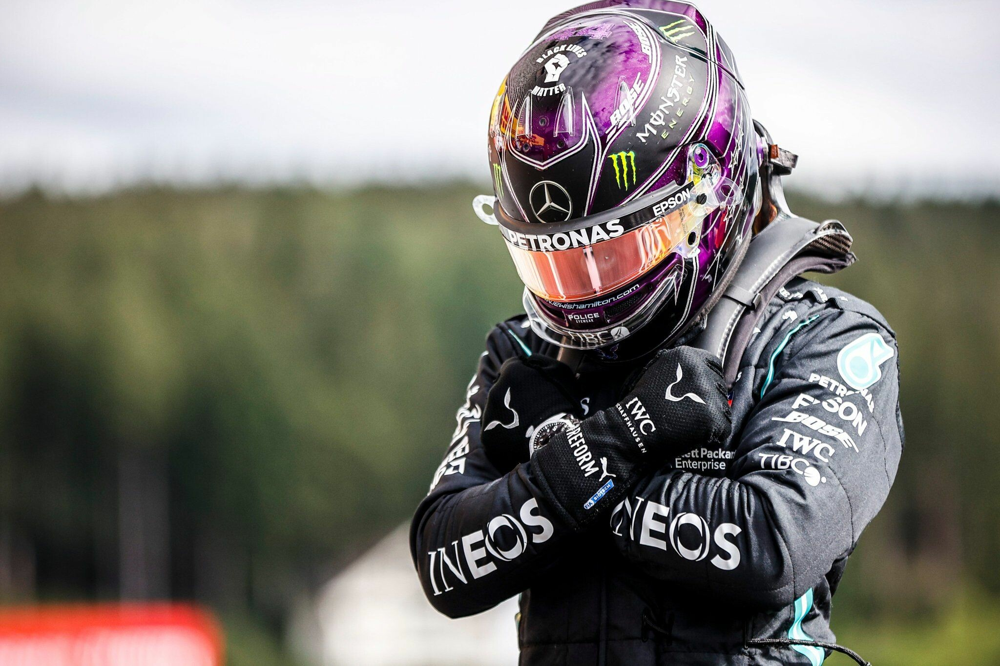
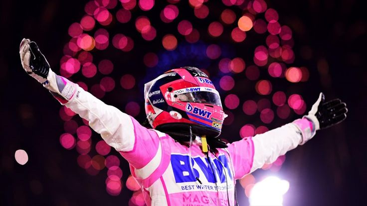

LOS TRES GRANDES

Lewis Hamilton es un piloto británico considerado uno de los mejores de la historia de la Fórmula 1. Debutó en 2007 y ha construido una carrera llena de récords. 🏆 7 campeonatos mundiales (2008, 2014, 2015, 2017, 2018, 2019 y 2020). 🥇 105 victorias en Grandes Premios. 🏅 204 podios. 🔥 Es el piloto con más victorias y más pole positions en la historia de la Fórmula 1. Compitió durante muchos años con Mercedes-AMG Petronas Formula One Team, donde consiguió la mayor parte de sus éxitos, y posteriormente se unió a Scuderia Ferrari. Destaca por su regularidad, capacidad para gestionar neumáticos, velocidad en clasificación y habilidad bajo condiciones difíciles como la lluvia. Gracias a sus logros, suele ser comparado con Michael Schumacher en el debate sobre quién es el mejor piloto de todos los tiempos.

Max Verstappen es un piloto neerlandés que revolucionó la Fórmula 1 por su precocidad y agresividad al volante. Debutó en 2015 con solo 17 años, convirtiéndose en uno de los pilotos más jóvenes en competir en la categoría. 🏆 4 campeonatos mundiales (2021, 2022, 2023 y 2024). 🥇 71 victorias en Grandes Premios. 🏅 128 podios. 🚀 Es conocido por su estilo de conducción agresivo, su gran habilidad para adelantar y su extraordinario ritmo de carrera. Ha desarrollado toda su carrera de éxitos en Red Bull Racing. En 2021 protagonizó una intensa batalla por el campeonato contra Hamilton, logrando su primer título mundial. Muchos expertos lo consideran el piloto dominante de la década de 2020 por su combinación de velocidad, consistencia y capacidad para extraer el máximo rendimiento de su coche.

Sergio "Checo" Pérez es un piloto mexicano de Fórmula 1 nacido en Guadalajara. Es uno de los pilotos más exitosos de la historia de México en el automovilismo y ha sido muy popular por su capacidad para remontar carreras y gestionar neumáticos. 🏆 0 campeonatos mundiales. 🥇 6 victorias en Grandes Premios. 🏅 39 podios. 🚀 Debutó en Fórmula 1 en 2011. 🥈 Su mejor resultado en el campeonato fue el subcampeonato en 2023. Corrió para equipos como Sauber, Force India, Racing Point y Red Bull Racing. Fue una pieza clave en los éxitos de Red Bull, ayudando a Max Verstappen en la conquista de varios campeonatos de constructores. Checo es conocido como el "Rey de las remontadas" por su habilidad para recuperar posiciones durante las carreras y por su excelente gestión de neumáticos. Aunque no ha ganado un campeonato mundial, es considerado uno de los mejores pilotos mexicanos de todos los tiempos, junto a Pedro Rodríguez y Ricardo Rodríguez.